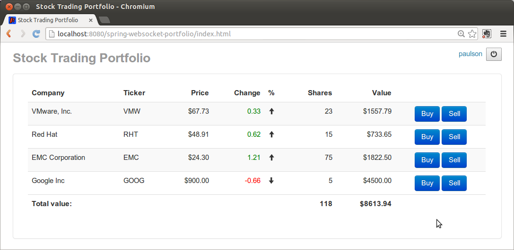
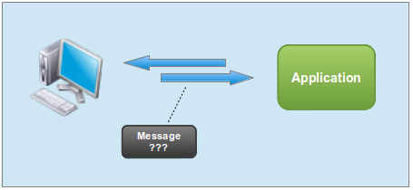
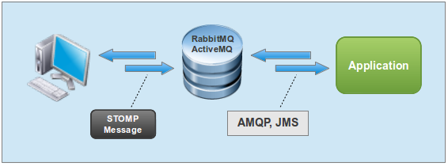
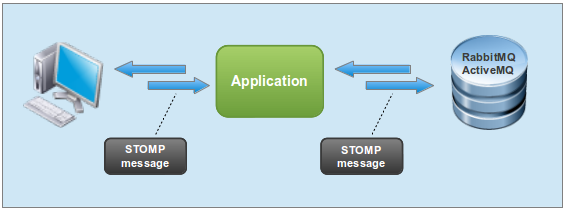
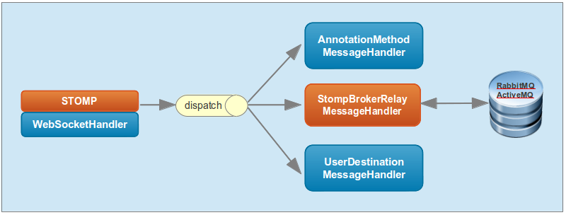
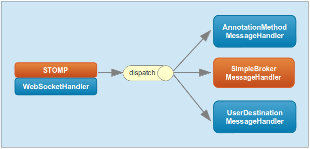

Overview
As I wrote previously,
a WebSocket API is only the starting point for WebSocket-style
messaging applications. Many practical challenges remain. As one Tomcat
mailing list user mused recently:
it does seem to me that websockets is still not really
"production-ready", (I am not talking about the Tomcat implementation
per se, but more generally) … native websockets capability in IE is only
available since IE-10 and that solutions which allow this to work in
lower IE versions are a bit "iffy" (relying on a diversion through
Adobe's FlashPlayer e.g.). (Most of our customers are largish
corporations, which are not going to update their browsers, nor open
special ports in their firewalls, just to please us).
The first milestone of Spring Framework 4.0 provided server-side support for SockJS,
the best and the most comprehensive WebSocket browser fallback options.
You will need fallback options in browsers that don't support WebSocket
and in situations where network proxies prevent its use. Simply put SockJS enables you to build WebSocket applications today and rely on transparent fallback options when necessary.
Even with fallback options, bigger challenges remain. A socket is a
very low-level abstraction and the vast majority of web applications
today do not program to sockets. This is why the WebSocket protocol
defines a sub-protocol mechanism that essentially enables, and
encourages, the use of higher-level protocols over WebSocket, much like
we use HTTP over TCP.
The second milestone of Spring Framework 4.0 enables the use of
higher-level messaging protocols over WebSocket. To demonstrate this
we've put together a sample application.
Stock Portfolio Sample
The Stock Portfolio sample application, available on Github,
loads a user's portfolio positions, allows buying and selling shares,
consumes price quotes, and displays position updates. It is a reasonably
simple application. Yet it handles a number of common tasks that are
likely to come up in browser-based messaging applications.

So how do we put together an application like that? From HTTP and
REST we are used to relying on URLs along with HTTP verbs to express
what needs to be done. Here we have a socket and lots of messages. How
do you tell who a message is for and what the message means?

Browser and server must agree on a common message format before such
semantics can be expressed. Several protocols exist that can help. We
chose STOMP for this milestone due to its simplicity and wide support.
Simple/Streaming Text-Oriented Messaging Protocol (STOMP)
STOMP
is a messaging protocol created with simplicity in mind. It is based on
frames modelled on HTTP. A frame consists of a command, optional
headers, and optional body.
For example the Stock Portfolio application needs to receive stock quotes, so the client sends a SUBSCRIBE frame where the destination header indicates what the client wants to subscribe to:
destination:/topic/price.stock.* |
As stock quotes become available, the server sends a MESSAGE frame with a matching destination and subscription id as well as a content-type header and a body:
content-type: application/json |
destination:/topic/stocks.PRICE.STOCK.NASDAQ.EMC |
{\"ticker\":\"EMC\",\"price\":24.19} |
To do all that in the browser we use stomp.js and the SockJS client:
var socket = new SockJS('/spring-websocket-portfolio/portfolio'); |
var client = Stomp.over(socket); |
var onConnect = function() { |
client.subscribe("/topic/price.stock.*", function(message) { |
client.connect('guest', 'guest', onConnect); |
This is a huge gain already!! We have a standard message format and client-side support.
Now we can move one to the server side.
Message-Broker Solution
One server-side option is a pure message-broker solution where
messages are sent directly to a traditional message broker like
RabbitMQ, ActiveMQ, etc. Most, if not all brokers, support STOMP over
TCP but increasingly they support it over WebSocket too while RabbitMQ
goes further and also supports SockJS. Our architecture would look like
this:

This is a robust and scalable solution but arguably not the best fit
for the problem at hand. Message brokers have typically been used within
the enterprise. Exposing them directly over the web isn't ideal.
If we've learned anything from REST it is that we don't want to
expose details about the internals of our system like the database or
the domain model.
Furthermore, as a Java developer you want to apply security,
validation, and add application logic. In a message-broker solution the
application server sits behind the message broker, which is a
significant departure from what most web application developer are used
to.
This is why a library such as socket.io
is popular. It is simple and it targets the needs of web applications.
On other hand we must not ignore the capabilities of message brokers to
handle messages, they are really good at it and messaging is a hard
problem. We need the best of both.
Application and Message-Broker Solution
Another approach is to make the application handle incoming messages
and serve as intermediary between web clients and the message broker.
Messages from clients can flow to the broker through the application and
reversely messages from the broker can flow back to clients through the
application. This gives the application a chance to examine the
incoming message type and "destination" header and decide whether to handle the message or pass it on to the broker.

This is the approach we've chosen. To illustrate better here are some scenarios.
Load portfolio positions
- Client requests portfolio positions
- The application handles the request by loading and returning the data to the subscription
- The message broker is not involved in this interaction
Subscribe for stock quotes
- Client sends subscription request for stock quotes
- The application passes the message to the message broker
- The message broker propagates the message to all subscribed clients
Receive stock quotes
- QuoteService sends stock quote message to the message broker
- The message broker propagates the message to all subscribed clients
Execute a trade
- Client sends trade request
- The application handles it, submits the trade for execution through the TradeService
- The message broker is not involved in this interaction
Receive position update
- Trade service sends a position update message to a queue on the message broker
- The message broker sends the position update to the client
- Sending messages to a specific user is covered in more detail further below
Strictly speaking the use of a message broker is optional. We provide
an out-of-the-box "simple" alternative for getting-started. However the
use of a message broker is recommended for scalability and for
deployments with multiple application servers.
Code Snippets
Let's see some examples of client and server-side code.
This is portfolio.js requesting portfolio positions:
stompClient.subscribe("/app/positions", function(message) { |
self.portfolio().loadPositions(JSON.parse(message.body)); |
On the server side PortfolioController
detects the request and returns portfolio positions demonstrating a
request-reply interaction that is very common in web applications. Since
we use Spring Security to protect HTTP requests, including the one
leading to the WebSocket handshake, the principal method argument below is taken from the user principal Spring Security set on the HttpServletRequest.
public class PortfolioController { |
@SubscribeEvent("/app/positions") |
public List<PortfolioPosition> getPortfolios(Principal principal) { |
String user = principal.getName(); |
Portfolio portfolio = this.portfolioService.findPortfolio(user); |
return portfolio.getPositions(); |
This is portfolio.js sending a trade request:
stompClient.send("/app/trade", {}, JSON.stringify(trade)); |
On the server side PortfolioController sends the trade for execution:
public class PortfolioController { |
@MessageMapping(value="/app/trade") |
public void executeTrade(Trade trade, Principal principal) { |
trade.setUsername(principal.getName()); |
this.tradeService.executeTrade(trade); |
PortfolioController can also handle unexpected exceptions by sending a message to the user.
public class PortfolioController { |
@ReplyToUser(value="/queue/errors") |
public String handleException(Throwable exception) { |
return exception.getMessage(); |
What about sending messages from within the application to subscribed clients? This is how the QuoteService sends quotes:
public class QuoteService { |
private final MessageSendingOperations<String> messagingTemplate; |
@Scheduled(fixedDelay=1000) |
public void sendQuotes() { |
for (Quote quote : this.quoteGenerator.generateQuotes()) { |
String destination = "/topic/price.stock." + quote.getTicker(); |
this.messagingTemplate.convertAndSend(destination, quote); |
And this is how the TradeService sends position updates after a trade is executed:
public class TradeService { |
@Scheduled(fixedDelay=1500) |
public void sendTradeNotifications() { |
for (TradeResult tr : this.tradeResults) { |
String queue = "/queue/position-updates"; |
this.messagingTemplate.convertAndSendToUser(tr.user, queue, tr.position); |
And just in case you're wondering… yes PortfolioController can also contain Spring MVC methods (e.g. @RequestMapping) as suggested in this ticket by a developer who previously built an online game application:
Yes, having [message] mappings and spring mvc mappings consolidated would be nice. There is no reason why they can't be unified.
And just like the QuoteService and TradeService, Spring MVC controller methods can publish messages too.
Messaging Support For Spring Applications
For a long time Spring Integration has provided first-class abstractions for the well-known Enterprise Integration patterns
as well as lightweight messagings. While working on this milestone we
realized the latter was exactly what we needed to build on.
As a result I'm pleased to announce we've moved a selection of Spring
Integration types to the Spring Framework into a new module predictably
called spring-messaging. Besides core abstractions such as Message, MessageChannel, MessageHandler, and others, the new module contains all the annotations and classes to support the new features described in this post.
With that in mind we can now look at a diagram of the internal architecture of the Stock Portfolio application:

StompWebSocketHandler puts incoming client messages on
the "dispatch" message channel. There are 3 subscribers to this channel.
The first one delegates to annotated methods, the second relays
messages to a STOMP message broker, while the third one handles messages
to individual users by transforming the destination into a unique queue
name to which the client is subscribed (more detail to come).
By default the application runs with a "simple" message broker provided as a getting-started option. As explained in the sample README, you can alternate between the "simple" and a full-featured message broker by activating and de-activating profiles.

Another possible configuration change is to switch from Executor to Reactor-based implementations of MessageChannel for message passing. The Reactor project that recently released a first milestone is also used to manage TCP connections between the application and the message broker.
You can see the full application configuration that also includes the new Spring Security Java configuration. You might also be interested in the improved STS support for Java configuration.
Sending Messages To a Single User
It is easy to see how messages can be broadcast to multiple
subscribed clients, just publish a message to a topic. It is more
difficult to see how to send a message to a specific user. For example
you may catch an exception and would like to send an error message. Or
you may have received a trade confirmation and would like to send it to
the user.
In traditional messaging applications it is common to create a
temporary queue and set a "reply-to" header on any message to which a
reply is expected. This works but feels rather cumbersome in web
applications. The client must remember to set the necessary header on
all applicable messages and the server application may need to keep
track and pass this around. Sometimes such information may simply not be
readily available, e.g. while handling an HTTP POST as an alternative
to passing messages.
To support this requirement, we send a unique queue suffix to every
connected client. The suffix can then be appended to create unique queue
names.
client.connect('guest', 'guest', function(frame) { |
var suffix = frame.headers['queue-suffix']; |
client.subscribe("/queue/error" + suffix, function(msg) { |
client.subscribe("/queue/position-updates" + suffix, function(msg) { |
Then on the server-side an @MessageExceptionHandler method (or any message-handling method) can add an @ReplyToUser annotation to send the return value as a message.
@ReplyToUser(value="/queue/errors") |
public String handleException(Throwable exception) { |
All other classes, like the TradeService, can use a messaging template to achieve the same.
String queue = "/queue/position-updates"; |
this.messagingTemplate.convertAndSendToUser(user, queue, position); |
In both cases internally we locate the user queue suffix (through the configured UserQueueSuffixResolver)
in order to reconstruct the correct queue name. At the moment there is
only one simple resolver implementation. However, it would be easy to
add a Redis
implementation that would support the same feature regardless of
whether the user is connected to this or another application server.
Conclusion
Hopefully this has been a useful introduction of the new functionality. Rather than making the post longer, I encourage you to check the sample
and consider what it means for applications you write or intend to
write. It is a perfect time for feedback as we work towards a release
candidate in early September.
To use Spring Framework 4.0.0.M2 add the http://repo.springsource.org/libs-milestone or the http://repo.springsource.org/milestone repositories to your configuration. The former includes transient dependencies as explained in our Repository FAQ.
SpringOne 2GX 2013 is around the corner
Book your place at SpringOne in Santa Clara
soon. It's simply the best opportunity to find out first hand all
that's going on and to provide direct feedback. Expect a number of
significant new announcements this year. Check recent blog posts to see
what I mean and there is more to come!
Similar Posts
{kind=link}
{kind=link}
{kind=link}
{kind=link}
{kind=link}
{kind=link}
Abbas says:
Added on July 25th, 2013 at 12:24 pmGreat article actually…I loved the illustrations…
peter ferko says:
Added on July 26th, 2013 at 2:11 pmHallo, great article. I want to ask:
-Do you plan in near releases(maybe rc.) introduce feature which message delivery guarantee ? Eg. lose connection, and client cannot messages, also case in reconnecting phase. Solution for that is some cache. I think it's one of the most important feature.
-is it possible fallback to server sent events ?
-Why do you don't use atmosphere framework? I think it solve same problem
websocket-amqp says:
Added on July 27th, 2013 at 3:30 am-Hi,
I am exploring using websockets to publish amqp mesage onto browser.
Thank you so much for the article.I understood the part of sending request from client over websocket using STOMP protocol and then sending to message broker. however, I could nt understand how we recieve something from message broker and then send it across application as server side push. Can you please explain that part please.
online alışveriş says:
Added on July 29th, 2013 at 2:41 amnice works
Rossen Stoyanchev (blog author) says:
Added on July 29th, 2013 at 7:55 amhi Peter,
The STOMP protocol provides some constructs such as message receipts, acks and nacks, as well as transactions. Server implementations are also free to support different message delivery modes. This is the advantage of being backed by a fully-featured message broker which already implements those features and makes them available.
Yes, check out all supported transports on the sockjs-client page.
The atmosphere framework has been providing the ability to build real-time features into web applications for some time. That said I do think what we are adding something unique by relying on a standard sub-protocol for the message format that is already widely supported, by using SockJS (also widely supported) for fallback options, and by making it easy to integrate with a fully-featured message broker.
peter ferko says:
Added on July 29th, 2013 at 9:14 amThx rossen,
STOMP look really nice(ack, transaction..) but I'm interested in higher level abstraction I mean in cache. Caching is required, if you don't want to lose broadcasted messages.
Particularly atmosphere framework provide this build in cache feature:
"Atmosphere will always look in the cache and make sure all messages that occurred during the reconnection time are send back to the browser. The BroadcasterCache API is pluggable and Atmosphere ships with ready-to-use implementation."
For that it's enough annotate method with @BroadcasterCacheService. So programmer may not implement mechanism like: generate some UUID for clients, cache all messages in some pub/sub under this UUID, and if it wasn't acknowledged(eg. with STOMP ack message) then after client reconnect
send undelivered messages.
So I'm interested when do you plan in near releases this "automated" cache feature (eg. provide that through some annogation) ? I think it could be very helpful feature.
Rossen Stoyanchev (blog author) says:
Added on July 29th, 2013 at 11:26 amIf I understand correctly, you have AMQP messages created by an AMQP client and you would like to propagate such messages down to connected browser clients?
Obviously the AMQP message could be sent directly a topic or queue to which browser clients are subscribed. Also check the stomp documentation for your AMQP broker. For example RabbitMQ supports subscribing to queues created outside the STOMP adapter.
Another option is to consume AMQP messages from the application (e.g. via spring-amqp) and then broadcast to connected browser clients. In the sample code, see the QuoteService and the TradeService both of which broadcast messages through a messagingTemplate. Note that those messages originate from the server and not from a client.
Rossen Stoyanchev (blog author) says:
Added on July 29th, 2013 at 11:35 amApplication caching is indeed necessary if there are no other options but message brokers already provide this feature. For example see the section on durable topic subscriptions on the RabbitMQ stomp plugin page. All you need to so is add an "id" header and a "persistent=true" header to the subscription request.
yis says:
Added on July 29th, 2013 at 7:02 pmgood…
Venkata Parvatam says:
Added on August 6th, 2013 at 2:57 amNice Post Rossen
Venkata Parvatam says:
Added on August 7th, 2013 at 12:09 amHi Rossen
How about Security??
Sarah Ann says:
Added on August 7th, 2013 at 8:42 amRossen,
Do you know how to run Tomcat 8 in Eclipse Kepler?
The use of websockets, Spring 4.0.0.M2, and Tomcat is directly tied to a class that exists only in Tomcat 8. This is making it difficult to debug when there is no server adapter for Tomcat 8 currently in Eclipse.
Thanks,
Sarah
Rossen Stoyanchev (blog author) says:
Added on August 7th, 2013 at 9:17 amRegarding security, the application has a login page implemented with Spring Security so only authenticated users can enter. However, there is much more we can do for example to avoid issues arising from the different length of HTTP and WebSocket sessions, secure sending messages within the application through MessageChannel's, etc. It would be good to hear specific requirements if you have any, either here or preferably in our JIRA.
Rossen Stoyanchev (blog author) says:
Added on August 7th, 2013 at 9:22 amUnfortunately running with Tomcat 8 inside Eclipse is not supported yet. Now that there is an alpha release, hopefully we'll see that support soon.
That said, it's not very hard to debug with Tomcat 8 inside Eclipse. Just change the last line in bin/startup.sh to be (note the addition of "jpda"):
exec "$PRGDIR"/"$EXECUTABLE" jpda start "$@"Inside Eclipse create a remote debugging configuration for localhost port 80, launch it after starting Tomcat, and you can put breakpoints in the source code.
Tomas says:
Added on August 15th, 2013 at 8:48 amHi Rossen,
we are using Spring Security and oAuth in our application. We would like to use "Application and Message Broker" solution. Is it currently possible to use this solution with oAuth?
Thanks
Tomas
Rob Winch (blog author) says:
Added on August 15th, 2013 at 12:38 pm@Tomas – I'm not sure what you mean. OAuth is only designed for HTTP protocol, so there is no support for processing tokens embedded in WebSocket frames. However, at the time of the handshake the current HttpServletRequest.getUserPrincipal() will be transferred to the WebSocket Session regardless of how you authenticated (i.e. username/password, OAuth, etc). If this does not help, can you please elaborate what you mean by "is it currently possible to use this solution with OAuth"?
Tomas says:
Added on August 16th, 2013 at 5:46 am@Rob – We are using Rest and SSO and we want to use ws only for certain situations. I have not noticed in you example that the username and password are empty strings when connecting from client using STOMP library.
Also I have tried running example against ActiveMQ and I have noticed that it creates error queue and positions queue for each user on SUBSCRIBE. Is there a way how to remove such queues after UNSUBSCRIBE or connection timeout? For web applications with large number of users we don't want such queues to be hanging around.
Thanks
Tomas
Rob Winch (blog author) says:
Added on August 19th, 2013 at 7:30 am@Tomas – You are correct that we are not authenticating within the WebSocket handshake. Instead, we are relying on the existing HTTP Principal and transferring it over to the WebSocket Session. We started with this approach because we believe that most users will want to use both HTTP and WebSockets within the context of a web browser. Do you have a scenario where you believe authentication over WebSockets is necessary? I will note that we do not view the security solution as complete yet. In particular, we still have not demonstrated authorization within the WebSocket space. This is something we are working on within future iterations.
In regards to your question about ActiveMQ, Rossen is currently investigating an answer to this.
Rossen Stoyanchev (blog author) says:
Added on August 19th, 2013 at 8:42 am@Thomas, as Rob mentioned we are not using the STOMP user/pwd because the user is already authenticated via HTTP and is populated in the WebSocket session.
As for the second question, there is a configuration option to delete inactive destinations. You can see this tread as well for a bit more background. You'll need to ensure all messages are acknowledged (and the queues empty):
<code>var subsId = stompClient.subscribe("/queue/foo", function(message) {// ...stompClient.ack(message.headers['message-id'], subsId);},{ack: 'client'});There are some additional options as well that might be suitable or complementary.
Pieter says:
Added on August 20th, 2013 at 1:48 amHi Rossen,
I tried the example and it works fine on chrome and firefox, but it doesn't seem to work on IE9 (I run the server using 'mvn jetty:run'). Is the fallback support still work in progress or do I have to enable it somehow?
I have a second question: we need to push messages to a specific 'session': so if the same user opens 2 tabs in the same browser, those tabs will receive different messages, although they have the same JSESSIONID). Is this possible?
Thanks
Pieter
Tomas says:
Added on August 20th, 2013 at 6:31 amHi,
I have started testing the example against RabbitMQ (we are currently evaluating brokers as well as frameworks for pushes from server to browser) and I have noticed that each logged in user is creating new connection to the broker rather than just a channel (there is also one connection to topic from application itself). So for 3 connected users we can see 4 connections and 4 channels created. Applications with higher number of users won't be able to create one connection per user. They will require some way of plugging in connection factory and do connection pooling.
Is there way how to specify custom parameters when user queue is declared ?
Same as with ActiveMQ we would like to declare Queue TTL which can be done by using "x-expires" argument when declaring the queue. Also we would like to specify custom key bindings and connect user queues to different exchange than the default one.
Our use case is as following:
Other service located on different server will do some processing and publish messages to exchange even for users that are not connected, users that are connected should be notified. Messages for users that are connected will be sent from exchange to user queues. Messages for not connected users would just disappear in the exchange because there wont be any key bindings. Queues will have short TTL so they are quickly discarded and do not consume server resources.
Is that possible?
Thanks
Tomas
Tomas
Rossen Stoyanchev (blog author) says:
Added on August 20th, 2013 at 2:19 pmPieter, I made a couple of IE-related updates and tested on IE 8. Can you give it another try?
As for your second question, we intend to add an attribute in @ReplyToUser whether to reply to all sessions. Aside from that, if sending a message from anywhere, the question is how to identify which browser tab session is which? The username is a stable handle that can be used throughout. Perhaps the message can reach all sessions for a user and then each tab can filter what it needs, e.g. based on header. I'd be glad to hear suggestions.
kjordan says:
Added on August 20th, 2013 at 5:08 pmSince this makes use of the HttpServletRequest principal, how can this detect that a user's session timed out and they are logged out? This seems to be a hard thing to detect using websockets. Using the built-in Tomcat session manager, I can get it through the HttpSessionListener, but once you move outside of that, it only gets it when it queries whatever your session is stored in. The problem is a websocket can out-survive an HTTP session and still get data over it since it's past the filter now and HTTP sessions are a hard thing to get outside of the actual servlet (i.e. another thread).
Pieter says:
Added on August 21st, 2013 at 4:16 amHi Rossen,
Thanks for the quick fix. I tried it with IE9 and it works.
The only problem I have now is that there is no communication anymore after 2 minutes (no proxies involved): the protocol used is http-streaming and after 2 minutes the response is ended. It is followed by a new http-request (http-streaming) which is ended after 20 seconds. Then nothing happens anymore.
Filtering on client side should work, but if a lot of messages are transmitted then the overhead can be expensive (especially if we need to fallback to long-polling)
A possible scenario could be:
The client calls stompClient.connect() this results at server side in the generation of a unique queueSuffix and a call to StompProtocolHandler.onConnect(user, queueSuffix).
By extending the StompProtocolHandler, the application can register this session and do some application initialisation (if necessary).
The queue-suffix is then returned to the client.
The client subscribes to queueName queueSuffix
Methods annotated with @SubscribeEvent, @UnsubscribeEvent, @MessageMapping,… should not only receive the principal, but they should also receive the queueSuffix.
Using the @ReplyToUser (with the new attribute) the server can respond to the user or to the queueSuffix. Or it can pass the queueSuffix to a worker thread which then calls MessageSendingOperations.converAndSendToQueueSuffix(queueSuffix, destination, message) to respond to the 'queueSuffix'.
When a client calls stompClient.disconnect() or when client is 'killed' then StompProtocolHandler.onDisConnect(user, queueSuffix) is called and the application can clean up its session.
David A says:
Added on August 21st, 2013 at 6:43 amRossen, thanks for an awesome article.
I have a question regarding the example, I deployed to tomcat but when I login the Portfolio is empty and stays that way.
Am I forgetting something simple or the WAR deployment the only needed step?
Rossen Stoyanchev (blog author) says:
Added on August 21st, 2013 at 6:49 amThomas,
The protocol doesn't explicitly mention connection sharing but having a single client per connection is pretty much assumed in the ack/nack and begin/commit client frames. It would also interfere with broker-specific destination semantics, e.g. temp/client queues that would never be deleted since the (shared) connection remains connected.
The number of connections is not different than if you were connecting directly to Rabbit from browsers via STOMP/SockJS using Rabbit's stomp-web plugin.
The 4th connection by the way is in fact a shared connection. It is used to send messages that originate from within the application (e.g. stock quotes, position updates, etc). It is not associated with any client and it is never used for subscriptions.
Have a look through Rabbit's STOMP page, the section on destinations in particular. There are several supported destination prefixes. You can use a destination such as "/exchange/amq.direct/position-updates" (plus the unique queueSuffix as shown in the example) and that would create an auto-delete queue with a subscription for the current client session. You can use any other exchange as well.
This should be quite achievable. You can send messages to connected users from pretty much any part of the application (not just when responding to incoming messages). If you look at the TradeService or QuoteService, they do just that. You can also imagine the same from any other code, for example responding to an HTTP POST, or some external event.
Thanks for taking a look, keep the comments coming!
Rossen Stoyanchev (blog author) says:
Added on August 21st, 2013 at 7:11 amkjordan,
Yes this is a problem we are thinking about and it goes in both directions, i.e. if a user is interacting through the WebSocket, the application as a whole (including the HTTP session) should recognize that and remain connected/authenticated.
The question of when a user should be timed out is slightly more complex with WebSocket involved. For example when stock quotes are automatically pushed to clients it causes activity but the user is not involved. It is in part an application-specific question when to time out. A trader might want to watch this all day long. In other applications it may be appropriate to time out if the client hasn't done anything.
We will probably provide support for closing WebSocket sessions when the HttpSession times out. Feel free to create a ticket in JIRA.
Rossen Stoyanchev (blog author) says:
Added on August 21st, 2013 at 7:38 amPieter,
It would be good to find out where it ends. Is there a server-side failure for example, any client-side errors? Increase the logging of org.springframework.web and you might want to reduce the frequency of the quotes (see QuoteService @Scheduled) to avoid too much noise. Feel free to open a ticket in JIRA.
You could inject the UserQueueSuffixResolver into the controller and perform look-ups by user to get the queue suffix. However, the whole idea with direct messages to a user is that you don't have to keep track of session ids or queue suffixes since both can change as the user drops and/or reconnects.
Perhaps we should look at using something more than just the user name in UserQueueSuffixResolver, e.g. user name plus some additional user properties that can form a unique lookup key but a concrete example to have in mind would certainly help. I.e. what would a "/user/" prefixed URL with some additional attribute include? E.g. "/user/joe-{attr}/queue/foo".
Rossen Stoyanchev (blog author) says:
Added on August 21st, 2013 at 8:02 amDavid A,
If using IE, I added a couple of fixed yesterday. Otherwise try to find out if there is a client-side error (in IE enable error notifications or otherwise check in the Chrome dev tools) or server-side exception by looking in the Tomcat logs. Make sure you're using 4.0.0.BUILD-SNAPSHOT with Tomcat 8.0.RC1 (nightly snapshot should also work). There is nothing more than war deployment. You can also try "mvn jetty:run".
Sarah Ann says:
Added on August 21st, 2013 at 12:49 pmIn the AbstractHttpSockJsSession there is a message cache blocking queue with a capacity of 100 which does not appear to be configurable. Will there be a way to configure this limit in the future? And if not how can we handle high traffic from the server to the client with the periodic downtime of xhr streaming?
Rossen Stoyanchev (blog author) says:
Added on August 21st, 2013 at 1:07 pmSarah Ann, yes good point that should be configurable. I added a comment to SPR-10844. If you have any suggestions or use cases to consider, feel free to comment on the ticket. Thanks.
Jim says:
Added on August 21st, 2013 at 4:04 pmCan you please explain on how messages are propagated back to the clients through the application?
if someone publishes a messages to the broker does the broker deliver the message directly to the subscribed client or do the messages flow from the broker to the spring application and the application sends the message to the clients?
if so, how does the application know who are the subscribers? does it also keep track on the subscribers?
Pieter says:
Added on August 22nd, 2013 at 4:38 amHi Rossen,
For the IE9 issue a created a jira entry: https://jira.springsource.org/browse/SPR-10854
I think that an attribute identifying the stomp session is a good candidate for the lookup.
I suggested to use the queueSuffix, as the StompProtocolHandler.handleConnect() already creates a queueSuffix and the SimpleUserQueueSuffixResolver keeps track of this.
Rossen Stoyanchev (blog author) says:
Added on August 22nd, 2013 at 8:20 amJim,
Clients are connected to the Spring application, they do not have a direct connection to the broker. The application in turn establishes connections to the broker so when a message is published it can flow (through the application) down to all subscribed clients.
The application can intercept subscriptions and messages but does not need to keep track of them. That's the job of the broker and it's broker that is aware of all subscriptions.
Rossen Stoyanchev (blog author) says:
Added on August 22nd, 2013 at 8:33 amPieter,
The queue suffix is fundamentally a transient value. It will change if the client disconnects and reconnects. Ideally you want something that can be known in any part of the application. For example it's easy to imagine an HTTP POST processing method sending a message to a user but how would it know which session? It has to refer to something well-known or something that can be looked up. For example if each tab has a different chat room, it could be the name of the chat room.
Pieter says:
Added on August 23rd, 2013 at 3:29 amHi Rossen,
I understand your concerns.
But maybe we could bring this functionality to the application level using selectors (user defined STOMP-headers).
The application could generate a (unique) token and it could add a custom header 'selector: token' to each send and subscribe. The corresponding server methods should have access to these custom headers (or all headers).
The spring framework filters out the messages based on the selector, in order to remove the overhead of unnecessary messages.
The framework should also keep track of those custom headers of outstanding subscriptions, in order to pass these to the unsubscribe method (or another method to link the unsubscribe with he correct subscribe). So, resources allocated during the subscribe could be released in the unsubscribe.
Pieter
Christophe Levesque says:
Added on August 26th, 2013 at 4:02 pmThanks for the post and sample app!
I would like to implement some level of security between the client and the message queue but am not sure what's the best way to do this. I guess one way would be to have the application act as some kind of proxy for the queue. For example:
- client sends a SUBSCRIBE for /topic/price.stock.VMW
- application receives the SUBSCRIBE message, parses the destination to find out the target stock and checks whether the user is allowed to subscribe for this topic according to some custom rule (e.g. only allow if the user has that stock in his portfolio).
- if check is OK, subscribe the client to the topic / else send an error to the errors queue
Any idea how such a scenario could be implemented?
Tomas says:
Added on August 27th, 2013 at 4:20 amIn addition to what is described by Christophe it would be really useful if subscription message could be also modified/pre-processed so message headers can be added/removed/changed.
Our use case is:
User subscribes to a topic with selector "accountId = '{externalValue}'". XYZ is encoded value so the real value is not exposed to the outside world. XYZ needs to be decoded to internal value and the header replaced so it reads "accountId = '{internalValue}'".
Rossen Stoyanchev (blog author) says:
Added on August 27th, 2013 at 12:20 pmChristopher, I think a ChannelInterceptor would be a good fit for that, you can see the ChannelInterceptor in SI, which is what it'll probably be based on. Then you could intercept the channel to which all client messages are sent. Would you mind creating a request in JIRA?
Thomas, such an interceptor could also be used for modifying messages.
Tomas says:
Added on August 28th, 2013 at 3:02 am@Rossen – ChannelInterceptor makes sense.
I have solved it bu sub-classing StompBrokerRelayMessageHandler and overriding handleMesage method.
I was also investigating possibility of using @SubscribeEvent and @ReplyTo (post to different destination from browser so it is handled by Controller. Change message headers and change destination so it is handled by the Stomp handlers afterwards ) but all the native headers were lost and messageType has changed from SUBSCRIBE to MESSAGE.
Rossen Stoyanchev (blog author) says:
Added on August 28th, 2013 at 6:35 amI don't think that'll work easily since the STOMP client remembers the destination and uses it to match received messages back to the subscription function. So if you change the destination on the way to the server, you'll also need to change it back in messages from the server. Not an easy route for sure.
In general from the server application, you can only send MESSAGE frames, ultimately targetting one or more clients. Subscriptions on the other hand have to originate from the client.
Matt says:
Added on September 3rd, 2013 at 3:52 amHi Rossen,
Thanks for the great article!
You describe using the Simple message broker and that to change to use an external broker you simply "Comment in the stomp-broker-relay profile and comment out the simple-broker profile in DispatcherServletInitializer.java"
Don't you mean modify the WebSocketConfig class and replace enableSimpleBrokerRelay with enableStompBrokerRelay?
The DispatcherServletInitializer.java class does not mention the relay.
Also, in the master branch, it seems the WebSocketConfig class is already set up pointing to the enableStompBrokerRelay…
Once I made the changes above I was able to get it to work.
Rossen Stoyanchev (blog author) says:
Added on September 3rd, 2013 at 11:55 amHi Matt, I did recently introduce use of dedicated Java config, which simplifies the configuration significantly. I've now updated the README to reflect that. Thanks for reminding me that it needs updating. I also switched back to using the simple broker by default.
Matt says:
Added on September 4th, 2013 at 5:01 amDid you have any trouble with latest tomcat 8 releases? It looks like the 8-RC1 release throws a method not found exception for doUpgrade. Subscribing to the SNAPSHOT gets websockets to work but I'm seeing intermittent 404 errors. Guess it's the price to pay for the latest and greatest…
Rossen Stoyanchev (blog author) says:
Added on September 4th, 2013 at 6:16 amYes, unfortunately 8.0-RC1 no longer works. Eagerly awaiting RC2 this week (and a backport of the WebSocket support in Tomcat 8 to Tomcat 7).
Meanwhile a snapshot can be downloaded and should work. It's what I'm using regularly. If you have any details on the 404s feel free to open a ticket in JIRA.
Matt says:
Added on September 4th, 2013 at 7:43 amExciting!
Actually, I was able to figure it out – it looks like the latest Tomcat release is very sensitive to using "/" as your context path. Intermittently, it was unable to find the matching request mappings by creating requests with double slashes: //something/something
By changing the webapp context to an empty string "", it works.
Of course, this only affects websites on the root context, otherwise "/my-web-app" will still work.
Note: I've only tested in embedded mode!
Abraão Isvi says:
Added on September 10th, 2013 at 12:47 pmNice!